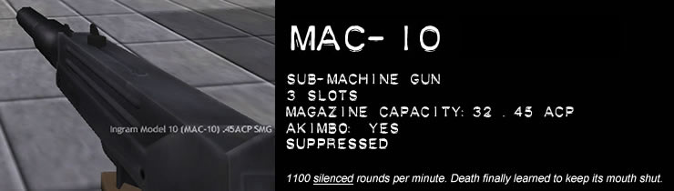

Weng knew he was in hell. He was just surprised at how quickly hell came, and how quiet it was.
The streets were absolutely silent, even though he knew there were two others about-probably both hiding, as he was. A wry smile passed over his face. Assassins do that sort of thing: mentally prepare themselves before a battle for survival.
Weng's hands passed over his body as he thought, subconsciously checking his arsenal. Twin Berettas tucked into his pants, by his back; a knife sheathed in his boot; and, of course, the Desert Eagle in his hand. He passed the handgun to his right hand, checking the weight, the balance. It was perfect, a well-crafted piece of weaponry. Weng had worked hard for his weapons, the better to stay alive. Assassins need weapons for survival.
Those efforts would save his life now, or be for naught.
The wind howled, whipping his trenchcoat about his body as he crouched. A silent curse echoed in Weng's head—that would make things difficult. The wind only made it harder to hear the others. There definitely were others.
He sat there, in hell, waiting for someone to be foolish enough to make the first move, when he saw something land softly on the pavement before him. Weng narrowed his eyes—the thing almost blended into the pavement—before he realised what it was.
A black rose.
Instantly, two things popped into his mind—someone knew where he was, and, more importantly, someone was taunting him instead of firing. Of course, assassins do that sort of thing, too, but only among assassins—a twisted sort of professional courtesy.
Weng didn't have long to think, though—bullets started to cascade around him, shrapnel flying up from the pavement. He dove underneath the car, crushing the rose with his body as he slid to safety. The bullets smashed the windshields, the glass falling inside the car and out, peppering the road with sharp points.
He cursed—Weng was effectively blind, and pinned, underneath the car. He turned his head, in enough time to see his second adversary standing in an alleyway, smoking. The cloaked man tossed the butt away, crushing the glowing stick under his boot, before drawing his Uzi. A small fragment of asphault stung Weng's cheek, prompting action.
Weng rolled, kicking to a standing position, and dashed with all the speed he could muster as the bullets from above followed him in a line. He dove again, coming up behind a corner, and squeezed a few shots at the smoker (the only gunman in sight). He retaliated, spraying a few rounds in Weng's direction for his trouble. The firing from above continued, taking chunks away from the wall behind which Weng was standing.
Hell was rapidly becoming a very loud, very dangerous place.
The Uzi-toting smoker started to back up, to look to the sky... he was trying to find the rooftop gunman. Catching a glimpse of the man, he fired another spray, the distinct chatter of an Uzi's automatic firing filling the night.
Taking advantage of the turned back, Weng raised his Eagle and fired. As if guided by a guardian angel, the smoking man turned slightly, only catching the round in the right shoulder—a move that saved his life. No sound escaped his lips but for a slight grunt—assassins don't scream in pain. The smoker whirled and took aim at Weng, but with his arm wounded, the Uzi's rounds initially went high... and just as they lowered, the click of an empty magazine sounded. The smoker muttered a low curse.
The roof gunman returned to his vantage point, sensing an advantage... but the Uzi swung back up. Weng blinked: the smoker could reload faster than he had ever seen before, even for an assassin. The smoker squeezed the trigger gently.
Weng watched as a brilliant flash burst from the Uzi's muzzle, almost straight up into the sky. The weapons discharged its entire clip, advancing a wall of lead towards the roof of the building. Concrete fell to the ground, shattering as they it his the sidewalk. One bullet pierced the hunched-over figure on the rooftop in the chest. A misguided spray of bullets rained from the roof, but moments later, the figure pitched over a railing and landed on the shot-out car under which Weng had first sought refuge. The metal complained in a loud crash, and Weng could see that the man was dead.
Taking the offensive, Weng threw his Eagle aside, not bothering to reload, and reached behind him, to draw out his Berettas. Both levelled, taking aim at the smoking man… and Weng dove forward, firing.
The smoker grunted again as one bullet found its mark, and fired his Uzi again—not remembering that the clip was empty. Weng twisted his body nonetheless, dodging bullets that never came, and rolled to a standing position.
The smoker's arms shot forward—in an instant, akimbo Beretta Tomcats sprung out into his hands. Weng didn't even have time to blink as his opponent grinned, an assassin's razor-edge smirk, and fired.
Pain seared across his legs, and Weng sucked in a shuddering breath. He hadn't felt the kiss of bullets in a long while. He tried to step back, but every motion filled him with agony… before a sudden calm came over him. Weng realised that the dance wasn't over, and his thoughts focused, the pain's spike becoming a dull throbbing. He stepped forward, and started to run, the howling wind only pushing him forward at a breakneck pace. The smoker blanched, and fired again, but the bullets never seemed to find their mark.
Silently, one Beretta came up, and at point blank range, Weng squeezed the trigger. He looked away, not wanting to see the smoker's head disappear in a pink cloud.
Weng dropped to his knees, panting… slowly setting the Berettas on the pavement. Hell was quiet once more, the wind becoming the prevalent sound, instead of gunfire. It was never easy to escape from such a life-threatening situation, and Weng had succeeded…
For an assassin, be it deathly quiet or a roaring crescendo, Hell happens all the time… and eventually, the assassin will succumb. For Weng, like the others, is merely a player on a stage. However, in this performance, actors are meant to die…
Welcome to The Opera.
Game Concept
Understanding the universe isn't important; understanding life isn't important. Understanding death is what keeps a man alive.
Ever watch a Hong Kong Blood Opera (HKBO) movie? This is one film genre which really takes action fans to the next level: the violence is stylised, carefully choreographed... it's cool.
The Opera isn't about blowing a body into a thousand pieces; it isn't about being impersonal as you send a bullet into someone's head from 800 meters away.
What The Opera IS about is John Woo-style gunfights—a recreation of an HKBO movie. Not a fragfest: a duel. Learning how to live with getting killed by a rocket launcher is easy. How about when your opponent double-taps you in the head with dual Berettas while diving backwards down a stairway?
Choose your weapons. Choose your Discipline. Choose your character. In a world of assassins, death is inevitable.
Go out in style.
In The Opera, you won't find ammo counters, damage measured in numbers, or power-ups. HKBO movies emphasise drama over silly, mindless action.
A dynamic damage system. Flowing trenchcoats—a first for the Half-Life engine. So are 3D muzzle flashes. Akimbo weapons all over the place. Stunts galore. Be prepared.
Getting Started
Know where to begin—otherwise, you won't be able to end.
In The Opera, each player gets eightslots that they can fill up with weapons. However, selecting weapons in-game can be annoying when you want to get out and duel, so it's wise to learn how to use The Shopping Basket.
At the beginning of each life, you are allowed to choose your weapons. However, with The Shopping Basket, you can create a pre-configured weapon selection.
Click "Add" to make a new configuration, or "Edit" to change one that's already made.
Select the weapons you want by selecting checkboxes. Clicking Akimbo lets you take two of that weapon. Remember that you cannot take more than 8 slots at a time.
Once you've finished making all the selections you want, give your setup a name, click "OK", and save your configuration.
Now you're ready to select your character and any other visual options.
Select your Half-life model and skin like you would any other game; click on the "Advanced" menu to change other options, such as parts of the Heads-Up Display (HUD).
When you start the game, you will be presented with your choice of Disciplines. Select one with your mouse or with the keyboard, using the number keys. Then select the weapon configuration of your choice.
Alternatively, you can select weapons in game. Click "Choose Items" and select a different configuration. The Left Mouse Button adds the weapon, and the Right Mouse Button removes it.
Third Person View
For those who want a little extra eye-candy in their game, you can turn on Opera's special third-person viewpoint. Your crosshair remains on the screen, and your character will vary in transparency, depending on your situation. You can enable this in the console by typing "op_thirdperson" to toggle it on or off, or by pressing the Third Person View Key (Default: Backspace).
Money
You can kill twelve people, and you'll make the news. You can kill three people a certain way, and the important people will take notice. That's how to get work.
Killing isn't everything. In The Opera, your kill count isn't the only thing that's important. You earn money throughout the match, depending on how stylistic you are. While you may be a great killer, if you don't do it with a certain flair, you're nobody.
For example: riddling a body with bullets from an Uzi while standing still may net you a couple of hundred bucks. Killing someone in one blow with a knife slash to the head while diving will earn you a few thousand.
If you deal damage or kill an opponent, you earn cash. However, other things such as dodging bullets, head shots, heart shots, and first blood will earn you money as well. Style wins out over brute efficiency in this game-keep that in mind while you play. The leaderboard will show those who have more cash at the top, rather than those who have more kills. Your current cash total can be found at the bottom left of your Heads-Up Display (HUD).
Damage System
It's not terribly hard to walk away from battle if you ignore the bullets. Even the ones inside you.
Damage in The Opera is handled a little differently. For every time you take damage, only a fraction of it, known as Bleeding Damage, is permanent. The rest of it, known as Trauma, is healed slowly over time. Of course, if at any time your damage exceeds your capacity, you die.
Notice that there is no damage indicator—unless you are using the Discipline of Perception. How often do you know, down the the point, how much damage you've taken in a movie? Learn to know your limits by feel. If you are using the Discipline, your damage indicator will be at the bottom left of your Heads-Up Display (HUD).
Performing a Heroic Action will help heal your wounds faster.
If you are using the Discipline of Determination, you take less damage than usual.
There is locational damage in The Opera. Getting shot in the legs will slow you down, and getting shot in the arms will worsen your aim.

Game Modes
The most successful assassins choose exactly where and how they kill their marks. It leaves little to chance.
Depending on the server you choose, different game modes will affect the manner in which The Opera is played. The current game mode can be found at the top of your Heads-Up Display (HUD).
Deathmatch
The standard FPS fare: kill or be killed—but make sure you look good while doing it! The player with the most cash at the end of the round wins.
Last Man Standing
Each player is allocated a number of lives. Once they have died this many times, they are out of the game. The last surviving player wins the round and gets a cash bonus.
X-Player LMS
A modified version of Last Man Standing, this mode has only "X" players active at once, with only one life. Observers cycle in between each round—keep winning to stay in the game!
Duelling Berettas
Infinite ammunition. No headshots, no heartshots. Reduced damage. Akimbo Berettas only. Good luck.
Mookmatch
A special, Opera-only mode! In Mookmatch, all players are on a team against a horde of mooks. (Mooks are the miscellaneous people that make up "armies" in HKBO's who all seem to die instantly with one hit.) Only maps specifically designed for Mookmatch support this mode, which is automatically selected when the map is loaded. Depending on the map, your objective is to get to the end, kill all the mooks, or something else. Check the map README for details.
Stunts
The art of killing and the art of movement are very closely linked.
All stunts (including jumps) will decrease your Action Meter, unless you have chosen the Discipline of Motion. When your Action Meter runs out, you will not be able to perform any stunts until you have allowed time to recharge.
Rolls, cartwheels, and somersaults all increase your Dodge Bullet capacity-while performing these stunts, there is a slight chance that bullet will "miss" you.
Rolls
You can perform rolls by pressing the Roll Key (Default: C) while holding down the direction you wish to go. Your view will rotate while rolling.
Note: You cannot roll backwards. You also cannot roll if you have a Long Gun equipped.
Dodges
Double-tap the Strafe Keys (Defaults: A and D) to dodge quickly in that direction. This option can be turned off in Advanced Player Setup.Dives
Diving is performed much in the same way as rolls are: press the Dive Key (Default: Right Mouse Button) while holding down the direction you wish to go.
If you tap the direction key or the Dive Key again during a dive, you will either roll (if you are diving forwards) or perform a cartwheel (if you are diving sideways). You cannot roll if you have a Long Gun equipped.
If you dive backwards, or do not press the Dive Key during your roll, you will slide along the ground. Control your slide by holding down direction keys. To get up, press the Move Backwards Key (Default: S or Down Arrow) or the Jump Key (Default: Spacebar). If you dove forward, you can roll along the ground by pressing the Sidestep Keys (Default: A, D, Left and Right Arrows).
Diving into someone will damage them. As well, diving and lying prone will slightly improve your aim.
Jumps
You can jump in the air by pressing the Jump Key (Default: Spacebar).
You can perform a somersault in the air by pressing the Jump Key during your jump. This gives you extra height. While in a somersault, it will be slightly harder for your opponents to hit you. If you are close to a player, this will Jump Kick them instead.
You can also perform a Wall Jump by pressing the Jump Key when making contact with a wall in mid-jump. This will push you up and away from the wall at a high speed.
Kicks
Pressing the Use key (Default: E) and the Dive Key (Default: Right Mouse Button) will let you kick out in front of you, when all other options have failed.
Looting
Have some time after wasting your enemy? Press the Use Key (Default: E) while next to a corpse to loot his body of some cash and some ammunition.Heroic Act
If you think it's all over for the hero, think again. Press the Heroic Act Key (Default: X) to perform a Heroic Act. It costs a large chunk of your Action Meter. It gives you a slight boost in speed, a slight amount of healing, and other benefits befitting a hero. However, once you perform a Heroic Act, you must wait a while before you can muster up the courage, determination, and spirit required for another one.

Weapons
You can prime your body all you want: push your endurance to the limits, run a kilometre in under four minutes, or be as quiet as a mouse. People don't kill people very well, though. Guns do.
You have 8 slots to fill with weapons. Choose wisely. Each subtype of weapon is selected by pressing a number on your keyboard, which is in parentheses.
Knives (Default: 1)
Small Calibre Pistols (Default: 2)
Large Calibre Pistols (Default: 3)

Sub-Machine Guns (Default: 4)

Long Guns (Default: 5)
Panic!
If you find yourself out of ammunition, or don't have time to reload, hitting the Panic Key (Default: P) will throw away your current weapon and slingshot akimbo Beretta Tomcats (secreted in your sleeve by a spring mechanism) into your hands. These are last-resort weapons; try not to rely on them.
Reloading
To reload your current weapon, press the Reload Key (Default: R). If you have akimbo weapons out, pressing the Reload Key will reload them both. Characters using the Discipline of Reaction reload faster. To stop reloading a Long Gun, press the Reload Key again.
There is an option in your Advanced Player Setup to reload automatically.
Holstering
To holster your weapon, hit the Holster Key (Default: H). This can be useful for setting up duels with people; it prevents accidental kills before the big fight happens.
Akimbo versus Single
If you have two of a weapon, you can fire them akimbo-style—one in each hand. However, there are disadvantages to doing this. It takes longer to reload, and you go through clips faster. To switch between Akimbo and Single mode, press the Weapon Mode Key (Default: Z).
Ammunition
You start with a set amount of ammunition for each weapon you carry. To collect more ammunition, you can pick up a fallen opponent's clips. As well, getting a stylistic kill will earn you a free clip automatically.
Disciplines
Focus! Distraction is the first step towards an untimely death.
It's not enough to have the most impressive weaponry, or to have Olympic-class gymnastic ability—one must also have the specialised training that truly sets apart assassins from mooks.
These are inherent abilities and require no activation during a round.

Strategy
The best way to learn about duelling is to duel and survive. However, it's useful to know how to survive before the duel even begins...- Don't forget that diving improves aim. Use this to your advantage, especially when using large calibre pistols.
- If you have a sneak shot, aim for the head. You'll lose your advantage of surprise afterwards.
- If you have seven slots filled in your weapon configuration, take a Combat Knife. You just never know when it'll come in handy.
- When there's a lull in the action, reload if you only have half a clip left. Running out of ammunition is dangerous in a duel.
- While reloading, stunts will help evade the enemy. Dive like mad.
- Remember that you can't roll with Long Guns. They're useful for a first hit or two, but switching to pistols or SMG's will help you regain your mobility.
- In narrow corridors, Long Guns are king.
- If you run out of ammunition and you're high up, see if you can dive to another location far away to give you time to reload.
- Bunny-hopping will not serve you well in this game.

Credits
It is not enough to be thankful that you're alive; it's just as important to know who to thank.
His name was Paladin.
The name became a joke, in some circles… something akin to a story designed to scare children into being good. "Careful. Paladin'll get ya."
There is a code of ethics, among assassins, strangely enough. There are rules of engagement; those who violate them don't get reprimanded. They get to deal with Paladin.
Weng didn't believe that Paladin actually existed; the stories were simply too fantastic. He would have been surprised to learn, then, that Paladin was watching him from a second-floor window, and it was Paladin who had thrown the black rose that prompted the duel.
Paladin frowned, looking at the wreckage left behind from the firefight. The rooftop gunman still lay on the car, the smoking assassin beside it. It was disgusting, really. No honour. They were more concerned with their impressive firepower. They weren't in it for the rush, the slight bitter taste of adrenaline in the throat… they were in it for the guns. For the money.
He popped a pill into his mouth and swallowed it-diazepam. It was an assassin's secret; adrenaline kept you alive, but it also played hell with your aim.
The threaded cylinders were lying on the desk beside him; Paladin picked them up and slowly screwed them into his Walther PPK pistols. He watched the Weng's crouched figure suck in breaths for a short time, and then readied himself. It was time for Weng to dance again.
A second black rose fell to the pavement at Weng's feet; he glanced about, instantly on his guard again. The fatigue that seemed all-consuming only moments ago fell away from him as he picked up his Berettas once more. Weng knew that there was something different happening now; this would be a true duel, one worthy of repeating.
One worthy to join the other stories that circulated about Paladin.
When Paladin was sure that his opponent was prepared, he dove out of the window, his suppressed pistols letting out muted yelps as he shot thrice. Weng heard one bullet sizzle close, almost too close, to his right ear; the other two made a dull clanging noise as they hit the Berettas in his hands, denting their barrels.
Weng was too surprised to even move as he watched Paladin hit the pavement with his shoulder, rolling with absolute silence. The moment of hesitation cost him, as he found his legs kicked out from under him. Weng did have the presence of mind to toss his useless pistols away, however. He rolled, until he hit the corpse of the smoking man; he pushed up with his hands into a cartwheel, grabbing the fallen man's Uzi in the process.
Paladin got up from the kick, his back to Weng, and walked slowly away, his trenchcoat flaring in the wind.
Weng remembered that the Uzi had no ammunition left, and so stooped, reaching out blindly for a spare magazine; he found one, amazingly, and slammed it into the gun.
Hearing Weng reload the Uzi prompted Paladin to spin, his coat swirling about him… and that's when Weng looked his attacker in the face for the first time. They both stood there a moment, looking at each other… a fury rising between them, but at the same time the strange mutual respect and admiration among assassins.
The moment was short-lived.
Paladin started to walk back, slowly, his guns held low. The Uzi flared in the night once more as Weng spewed bullets in Paladin's general direction; as if he intimidated the bullets themselves, none found their mark.
Weng panicked, ran forwards, and emptied the remaining bullets in the magazine, but to no avail. Paladin simply stood there, watching the younger man.
He knew it was over; Weng dropped the Uzi and ran.
Paladin shook his head, raised one PPK, and fired it twice. Weng stumbled, both of his legs crippled, and fell beside the car.
The other PPK came up, another two shots fired, directly into the smashed car's gas tank. Weng and the two corpses were consumed by the ensuing explosion. The walls of the surrounding buildings became scorched by the fire, and the asphalt grew soft.
Paladin always tried to clean up all the loose ends in his battles; the explosion, while a little too loud for his tastes, did quite nicely. He kicked the dropped Uzi towards the fire, finishing the job.
Except for the second black rose, of course.
Legends have to leave their
calling card, after all.